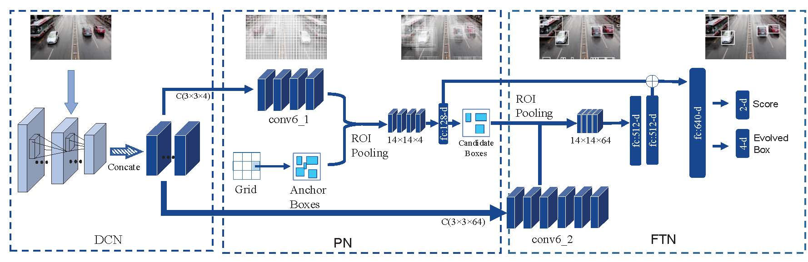

Li Wang1,2, Yao Lu3, Hong Wang2, Yingbin Zheng2, Hao Ye2, Xiangyang Xue1
1Fudan University 2Shanghai Advanced Research Institute, CAS 3University of Washington
We perform fast vehicle detection from traffic surveillance cameras. The classic cascade object detection is revisited and a novel deep learning framework, namely Evolving Boxes, is developed that proposes and refines the object boxes under different feature representations. Specifically, our framework is embedded with a light-weight proposal network to generate initial anchor boxes as well as to early discard unlikely regions; a fine-turning network produces detailed features for these candidate boxes. We show intriguingly that by apply different feature fusion techniques, the initial boxes can be refined in terms of both localization and recognition, leading to evolved boxes.

We evaluate our network on the recent DETRAC benchmark and obtain a significant improvement over the state-of-the-art Faster RCNN by 9.5% mAP. Further, our network achieves 9-13 FPS detection speed on a moderate commercial GPU.
The code can be downloaded from github.
Please cite our paper if you use the code in your research:
@inproceedings{wang2017evolving,
title={Evolving boxes for fast vehicle detection},
author={L. Wang and Y. Lu and H. Wang and Y. Zheng and H. Ye and X. Xue},
booktitle={IEEE International Conference on Multimedia and Expo (ICME)},
pages={1135-1140},
year={2017}
}